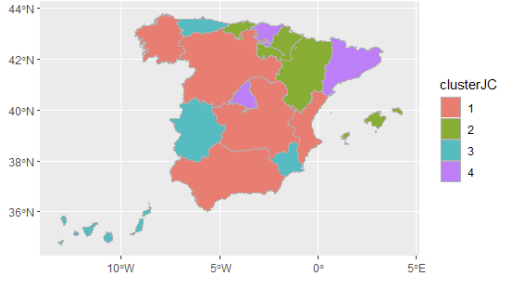

RStudio
Rmarkdown
This work emphasizes the importance of understanding and addressing tourism fluctuations to make informed decisions, such as enhancing infrastructure for caravans and campsites, and implementing marketing policies to attract more visitors to the country. üó∫Ô∏è

RStudio
Spatial Analysis
Clustering
Factorization techniques are used to explain most of the original variables with a smaller number of factors to use as potential predictors. üìã

RStudio
Behavioral Experiment
Behaviour patterns are identified by examining the data from a whistle experiment sample, enabling more informed decisions in the future regarding tax control. üßæ

RStudio
Spatial Analysis
Clustering
Both direct and hierarchical clustering methodologies are used to categorize communities into clusters that are homogeneous in nature but heterogeneously gendered. üìç

RStudio
Classification
The project involved developing highly effective classifiers to differentiate between customers with a 'good status' in relation to their loan and those with a 'bad status' or a high risk of default. üè¶